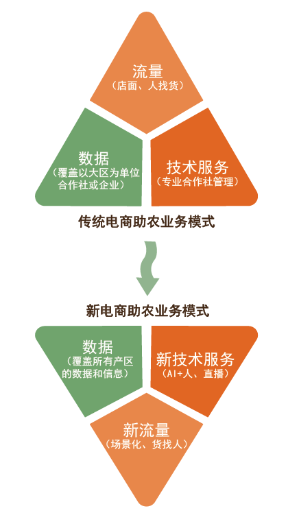

2021年2月25日，习近平总书记在全国脱贫攻坚总结表彰大会上庄严宣告，我国脱贫攻坚战取得了全面胜利。此后，全面推进乡村振兴成为三农工作的新重心。6月1日，《中华人民共和国乡村振兴促进法》正式实施，标志我国乡村振兴战略迈入了有法可依、依法实施的新阶段。
新冠肺炎疫情中，电商为无数滞销的农产品带来新消费，也为地方经济的复苏注入了新活力。如今，电商助农的常态化，更是巩固脱贫攻坚成果与衔接乡村振兴的有效手段。电商助农的魅力究竟在何处？接下来请通过解锁一个新身份来感受吧。
故事开端：您是一位来自农村的果农，主要从事农产品的实体销售。然而，突如其来的新冠肺炎疫情打破了生活的平静，自家农产品销售渠道受阻，您正面临着严重的产品滞销问题。此时，当地有关部门正在普及电商助农的新方式，您是否愿意尝试?
农村电商前景广阔
-
1998年
中国第一笔互联网网上交易成功。 -
2002年
中国电商在雏形期中发展，棉花、粮食开始电商交易。 -
2005年
电商进入快速发展阶段。 -
2007年
生鲜农产品开始电商交易。 -
2011年
农村电商正式兴起。 -
2013年
生鲜农产品物流提速。 -
2014年
以淘宝、京东为代表的传统电商平台上开展农产品上行活动。 -
2015年
中华供销总社成立电商平台，阿里巴巴，京东，苏宁等电商巨头开始更大规模的电商下乡进村。拼多多、云集、贝贝网等电商平台成立，并相继开始以拼购的模式进军农村电商市场。 -
2017年
以拼多多、抖音、快手为主要平台，以社交裂变直播短视频为主要展现方式兴起的农产品上行活先成为新电商代表在电商兴农业态中的主要运营模式。 -
2018年
农村电商出现融合化、绿色化、国际化趋势。 -
2020年
电商成为脱贫攻坚和乡村振兴的重要组成部分。
(轻触图表查看详细数据)
我国网络零售和农产品网络销量
我国电商市场稳定高速增长，农村电商步入更高质量发展的快车道，成为推动乡村振兴的新引擎。以下有两种电商助农方式，您希望选择电商直播新模式或是传统电商销售方式？
直播带货唤醒乡村活力
中国直播电商市场规模
2020年直播电商平台商品交易额
网络直播发展迅速，借助网络直播，农产品能够以更加直观和简单的形式走向市场。接下来，您可以了解传统电商，也可点击“继续故事”探寻电商直播助农和传统电商助农的差异。
传统电商探寻新道路
传统电商仍占主体
传统电商借助渠道去中间化、购物体验便捷等快速成长起来，但也面临消费者体验缺失、商家营销成本提高、流量天花板有限等问题，传统电商正在寻求发展新道路。
接下来您可以继续了解电商直播，也可点击“继续故事”探寻新电商直播助农和传统电商助农的不同之处。
电商助农新旧业务模式差异大

通过以上了解，您一定对电商助农的新模式有了更高的期待。接下来您将了解典型电商平台的成功案例，为您的农产品销售寻找到合适的电商平台。
恭喜您在电商助农的帮助下成功售出滞销的农产品
弥补了疫情带来的经济损失
2021年，新的篇章已经来临
电商助农“新常态”，乡村振兴“新引擎”
愿你我共同努力
奋力开创乡村振兴新局面